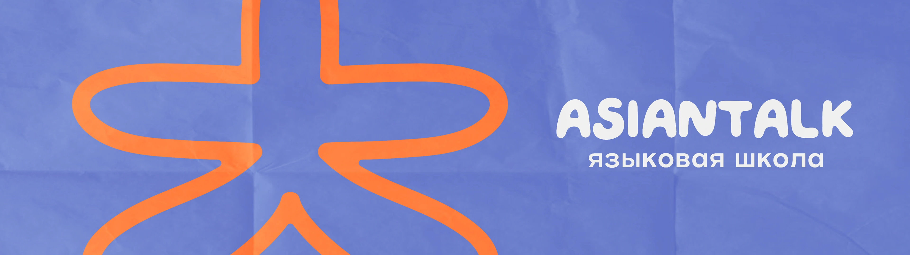
asiantalk
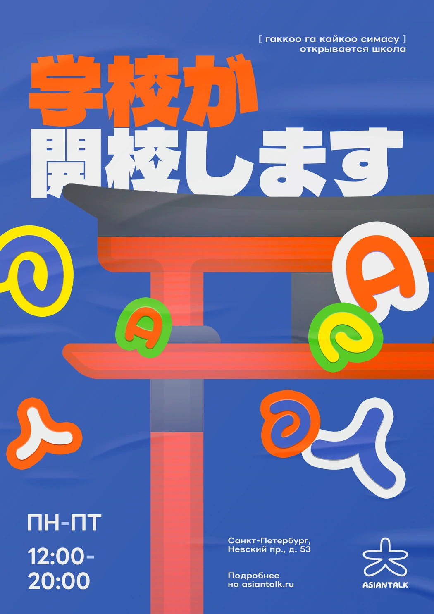
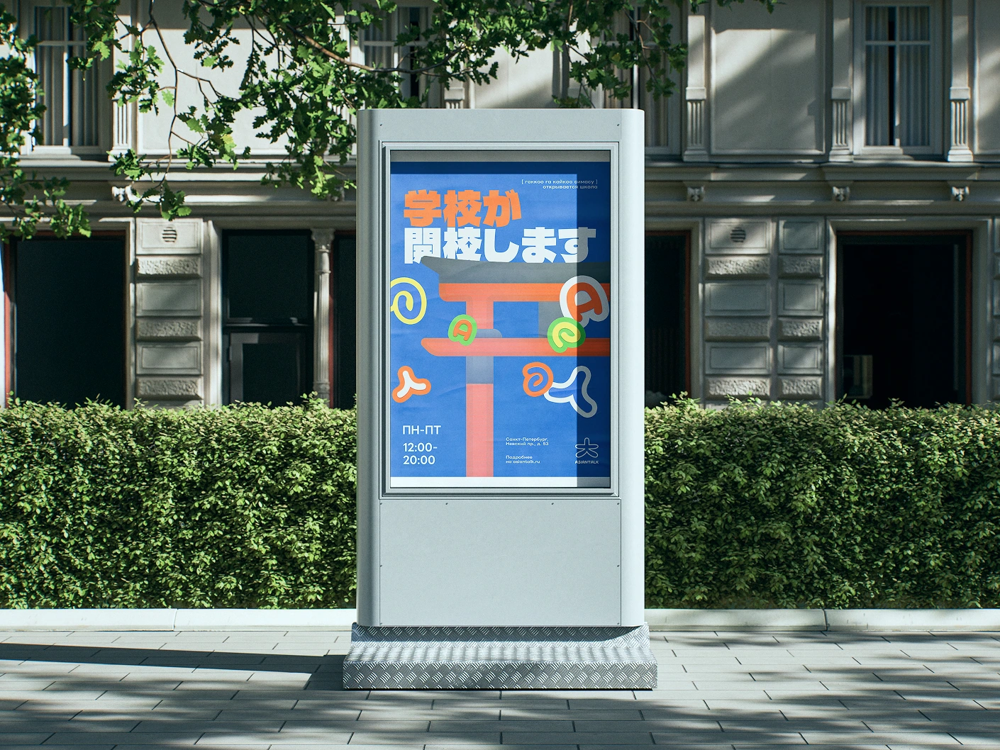
концепт дизайна
Знак отсылает к базовому иероглифу «человек», который считывается одновременно в китайском, японском и корейском языках, объединяя три направления школы. Его пластичная, чуть неровная геометрия переходит в фирменный паттерн и серию округлых маскотов.
Персонажи визуализируют живые эмоции от учебы и общения, помогая бренду выглядеть современным и открытым для любого возраста.
процесс работы
Работа началась с анализа аудитории (14–25 лет) и визуального разбора крупных языковых платформ вроде Duolingo и Busuu. Чтобы отстроиться от перегруженных игровых интерфейсов, был выбран более чистый, графичный подход с акцентом на культурологию и живое общение.
Были разработаны логотип, палитра, модульные графемы, набор стикеров и макеты для ключевых носителей: от мерча и упаковки до соцсетей и наружной рекламы.
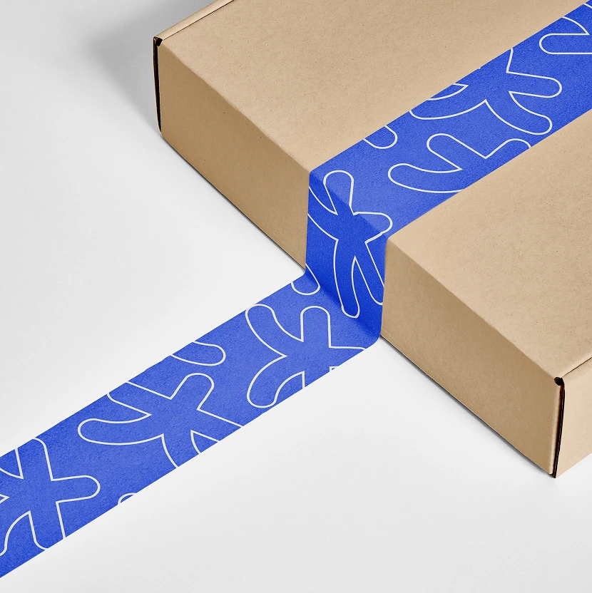
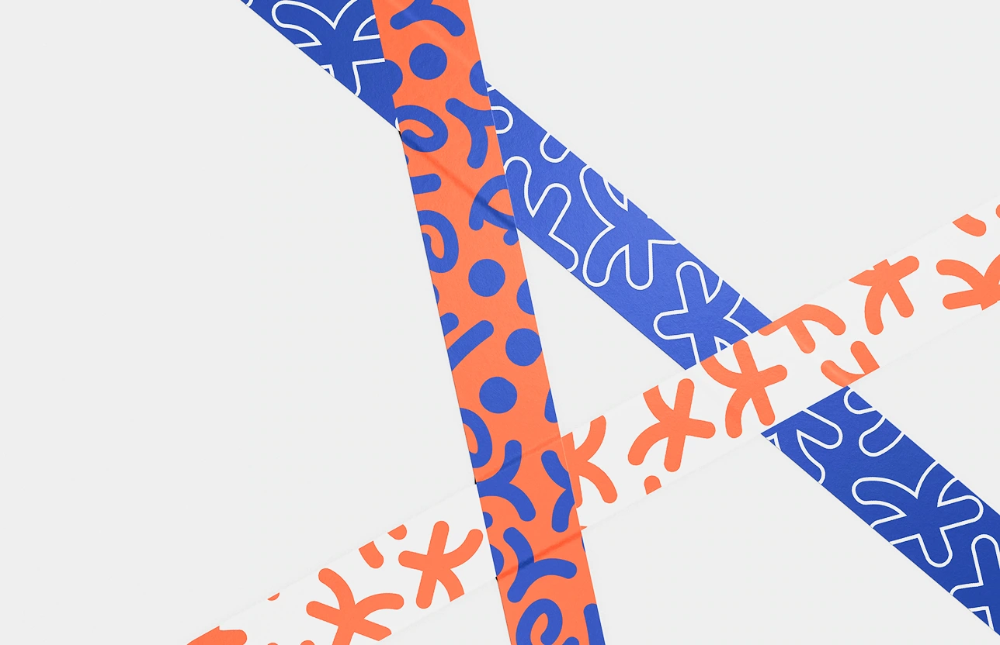
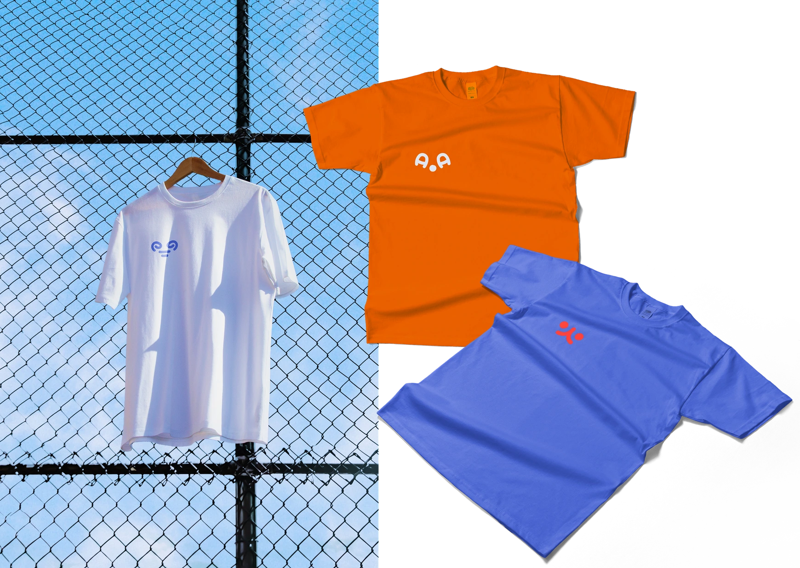
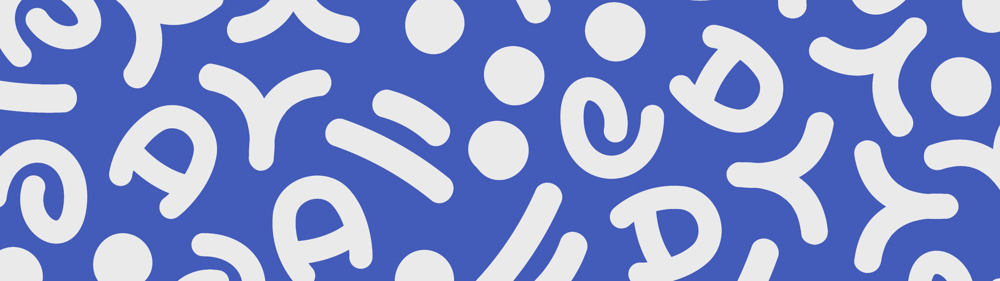
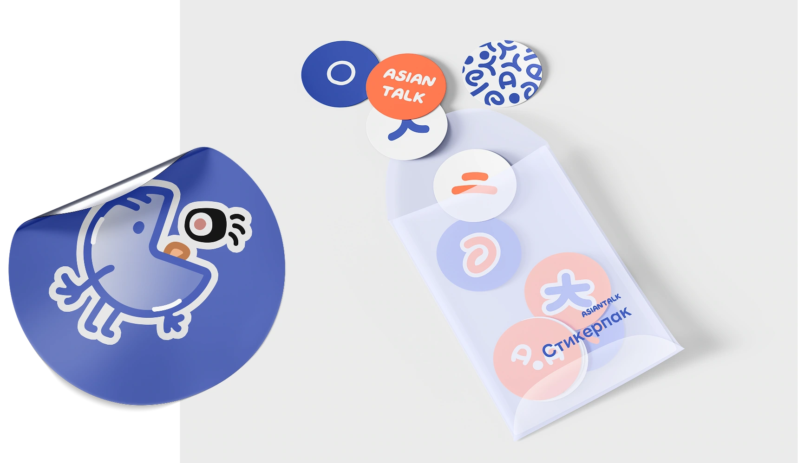
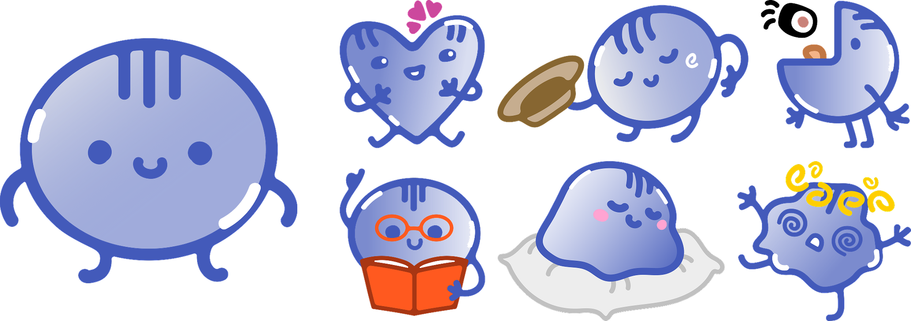
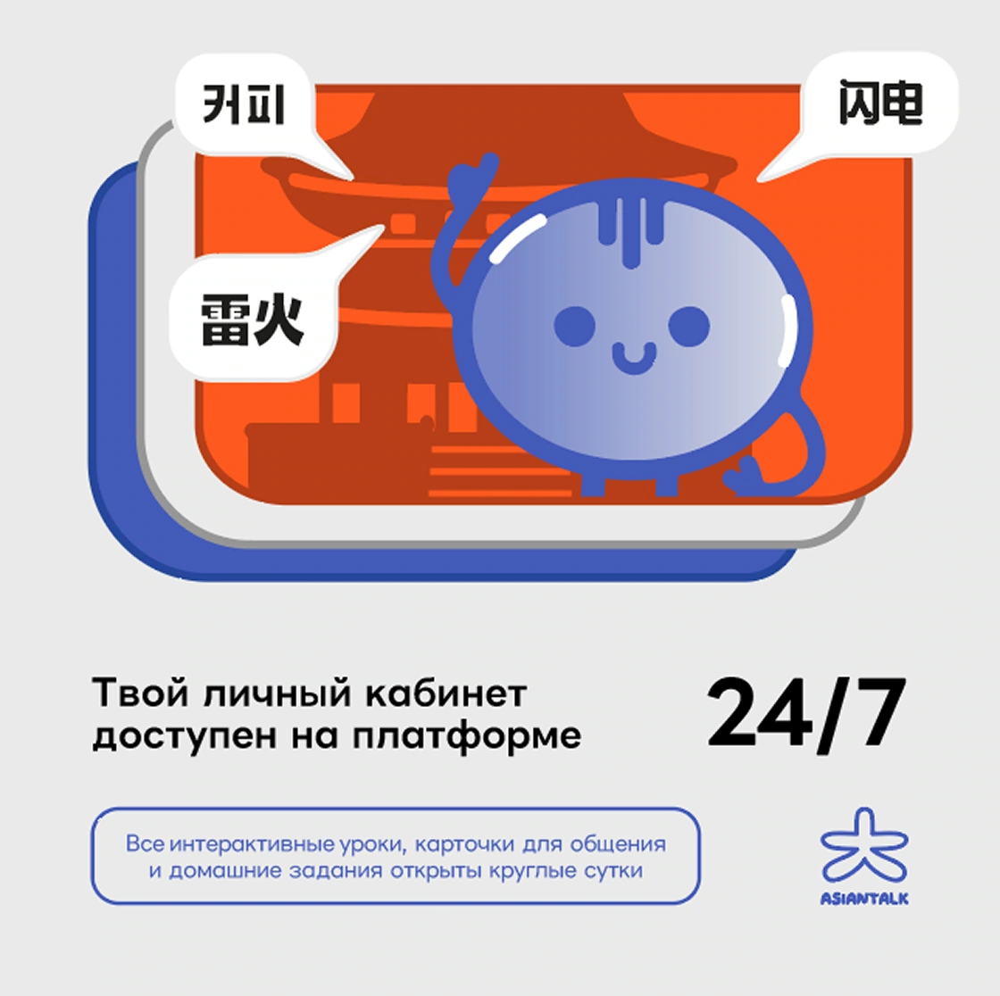
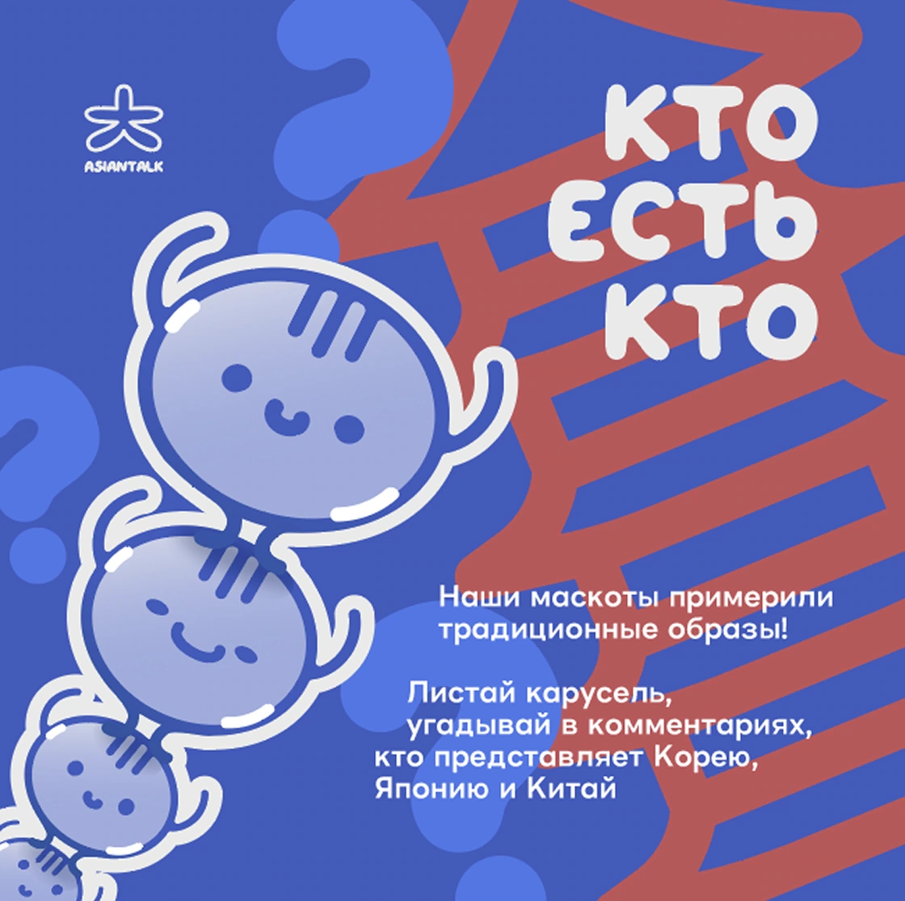